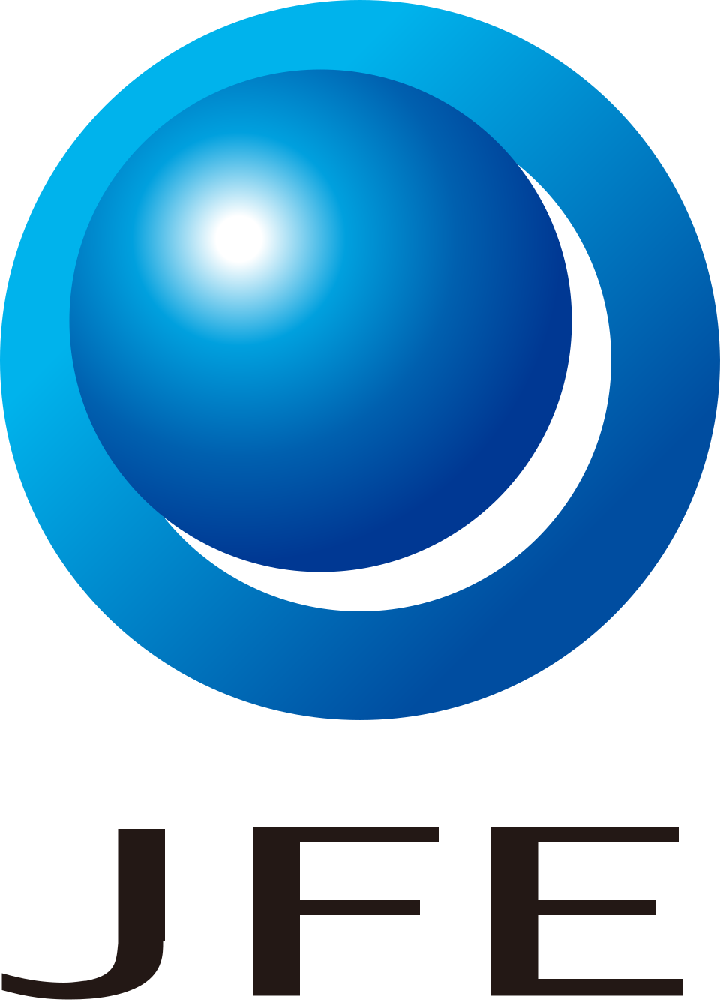

JFE 홀딩스 JFE Holdings
JFE 홀딩스(JFE Holdings)는 일본 도쿄도에 본사를 둔 기업이다. 2002년 NKK와 Kawasaki Steel Corporation의 합병으로 출범했으며 JFE Steel, JFE Engineering 등을 소유한다.
최종 업데이트

JFE 홀딩스는 어떤 브랜드인가
JFE 홀딩스는 일본 도쿄도에 본사를 둔 기업이며 주력 사업은 철강 생산이다. 철강 외에 엔지니어링, 조선, 부동산 재개발, LSi 사업도 한다.
미국의 California Steel Industries, 중국의 Fujian Sino-Japan Metal, 브라질의 Minas da Serra Geral 등 여러 해외 자회사도 운영한다. 자회사 JFE Steel은 세계에서 다섯 번째로 큰 철강 제조사이며 매출이 US$30 billion을 넘는다고 소개된다.
2002년 출범 당시 NKK는 일본 2위, Kawasaki Steel은 3위 철강사였고, 2020년에는 Fortune Global 500 목록에서 365위에 올랐다. JFE라는 이름은 일본(Japan), 철의 원소기호 Fe, 엔지니어링(Engineering)에서 따왔다.
JFE 홀딩스는 어떻게 시작되고 성장했나
JFE 홀딩스는 2002년 NKK(日本鋼管株式会社)와 Kawasaki Steel Corporation(川崎製鉄株式会社)이 합병하면서 만들어졌다. 두 회사는 제2차 세계대전 중 주요 군함 제조사이기도 했다.
조선 부문은 2002년 NKK가 Hitachi Zosen의 조선 부문과 통합해 Universal Shipbuilding을 세운 데서 출발했다. 2012년에는 Universal Shipbuilding Corporation이 IHI의 Marine United Inc.와 합병해 Japan Marine United Corporation이 되었다.
해외에서는 2009년 11월 인도의 JSW Steel과 서벵골에 합작 제철소를 짓기로 합의했고, 2010년 7월 JSW Steel Ltd의 지분 14.9%를 취득했다.
JFE 홀딩스의 브랜드 아이덴티티는 무엇인가
NKK와 Kawasaki Steel의 합병으로 출범한 일본의 철강 중심 기업으로, 철강과 함께 엔지니어링·조선 사업을 거느린 점이 특징이다.
JFE 홀딩스의 대표 제품과 서비스는 무엇인가
철강 생산이 주력이며 JFE Steel이 이를 맡고, JFE Engineering과 JFE Shoji도 자회사이다. JFE Engineering Corporation은 배터리를 약 3분에 0에서 50%까지 충전할 수 있다고 주장하는 급속 충전소를 개발하고 있다.
이 충전소는 전력망의 전기를 저장하는 배터리와 차량에 고전류(500-600 ampere)로 전달하는 배터리를 두어 저전압 전원을 쓸 수 있으며, 회사는 CHAdeMO 방식보다 약 40% 저렴하다고 밝힌다. bicycle tree는 최대 6,000대를 보관하는 자전거 자동 보관 시스템으로, 전자 태그와 기계 팔로 자전거를 넣고 꺼낸다.
JFE 홀딩스는 지금 어떤 상태인가
JFE 홀딩스는 JFE Steel, JFE Engineering, JFE Shoji 등을 자회사로 두고 Japan Marine United의 지분 일부를 보유한다. 2021년 1월 1일 JMU(지분 49%)는 Imabari Shipbuilding(지분 51%)과의 합작회사 Nihon Shipyard에 합쳐졌고, 이와 별도로 Imabari Shipbuilding이 JMU 지분 30%를 매입했다.
두 회사의 협력으로 세계 최대급 해양 엔지니어링·조선 기업 중 하나가 되었다.
JFE 홀딩스 로고는 어떻게 변해왔나
자주 묻는 질문
JFE 홀딩스는 어느 나라 브랜드인가요?
JFE 홀딩스는 일본의 에너지·산업재 브랜드입니다.
JFE 홀딩스는 언제 설립되었나요?
JFE 홀딩스는 2002년 설립되었습니다.
JFE 홀딩스의 브랜드 아이덴티티는 무엇인가요?
NKK와 Kawasaki Steel의 합병으로 출범한 일본의 철강 중심 기업으로, 철강과 함께 엔지니어링·조선 사업을 거느린 점이 특징이다.
JFE 홀딩스의 대표 제품은 무엇인가요?
철강 생산이 주력이며 JFE Steel이 이를 맡고, JFE Engineering과 JFE Shoji도 자회사이다.
JFE 홀딩스는 현재 어떤 상태인가요?
JFE 홀딩스는 JFE Steel, JFE Engineering, JFE Shoji 등을 자회사로 두고 Japan Marine United의 지분 일부를 보유한다.
JFE 홀딩스의 본사는 어디에 있나요?
JFE 홀딩스의 본사는 도쿄도에 있습니다(위키데이터 기준).
JFE 홀딩스의 공식 웹사이트는 어디인가요?
JFE 홀딩스의 공식 웹사이트는 https://www.jfe-holdings.co.jp/ 입니다.
출처와 검증
JFE 홀딩스 관련 참고: 공식 웹사이트 · 위키데이터 Q962591 · 한국어 위키백과 · 영어 위키백과. 브랜드명은 한글과 원어를 함께 표기하되 데이터에 없는 표기는 만들지 않습니다. 기원 국가·설립연도는 검수된 정의문에서 확인된 값을 우선하고, 없을 때만 공식 웹사이트 URL이 일치하는 위키데이터 개체의 값을 씁니다. 탄생일의 월·일은 위키데이터, 위키백과 정보상자, 본문 가운데 같은 연월로 확인되는 값만 싣고, 출처끼리 다르면 싣지 않습니다. 위키데이터 값은 2026-11-14 기준입니다.